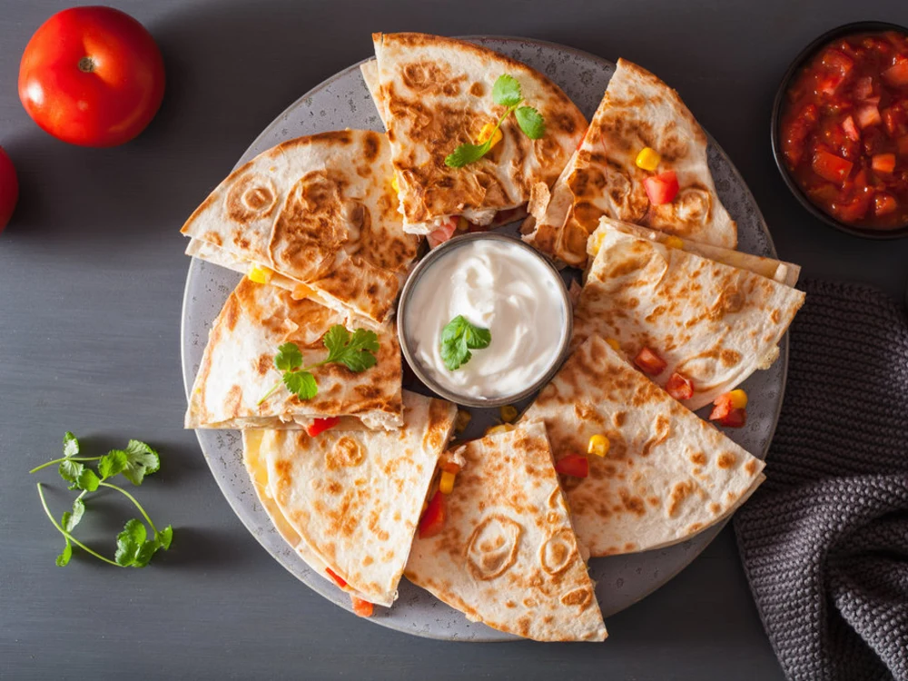
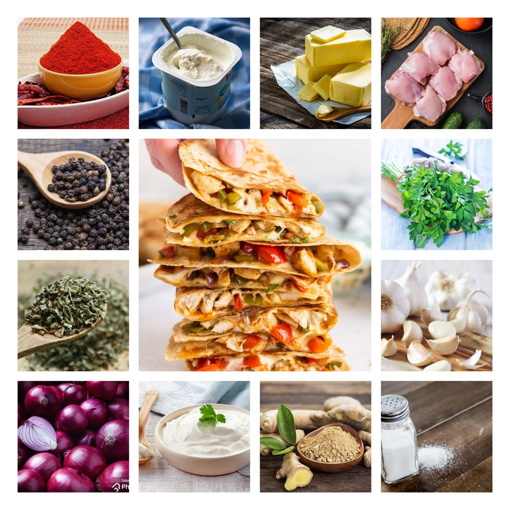

Quesadillas
Home
This chicken quesadilla recipe is great to make for parties. Zesty chicken, cooked peppers, and melted cheese are a delightful combination. Cut into wedges and serve with sour cream and salsa. A great snack for a get together. You can make a vegetarian version by with mushrooms instead of chicken. Quesadillas are tortillas that originated in Mexico. Serve this with salsa sauce to enhance your taste buds.

Ingredients
1 packet tortillas
2 cups cheddar cheese
100 gm chicken
1 bowl hung yogurt
2 tsp coriander
2 tsp spring onion
2 green chillies
1 tsp garlic
Sour cream
1 tsp cumin powder
1/2 tsp salt
A pinch of chilli powder
A pinch of onion salt
A pinch of oregano

Nutrition Facts
Calories 940
Total Fat 53g
Cholesterol 38mg
Sodium 1780mg
Total Carbohydrate 55g
Vitamin C 0%
Vitamin A 0%
Procedure
Place all ingredients together.
Boil chicken and shred. Sprinkle the taco powder over the chicken.
Whisk the coriander, spring onion and chillies into the hung yogurt. Season with salt.
Open a flour tortilla and layer with the yogurt mix. Add a little cheeses and top with chicken or mushrooms cooked in garlic and sprinkled with taco powder.
Sprinkle more cheese.Heat very little oil and cook till light brown. Flip.
Take the tortilla out and cut into triangles. Serve with sour cream, salsa, hot sauce or guacamole.
Expert Guide
Back ←
Scroll to Top ↑